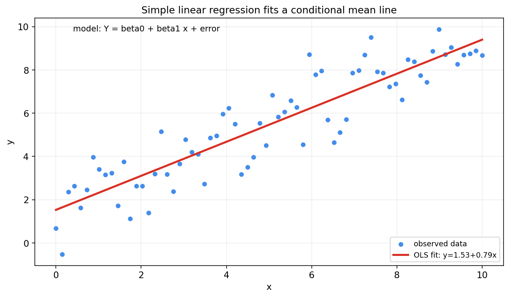
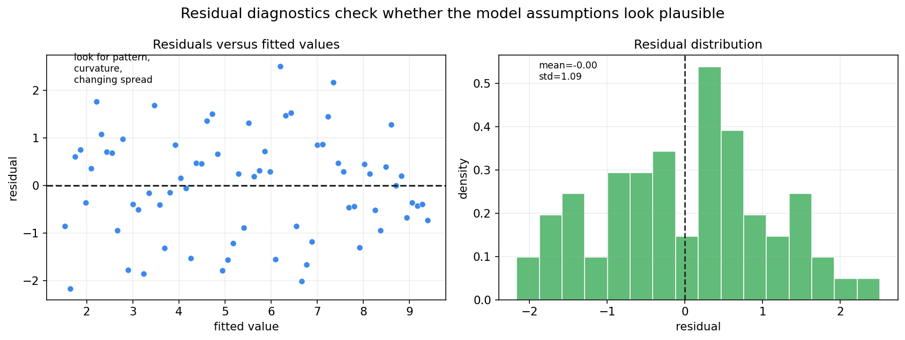
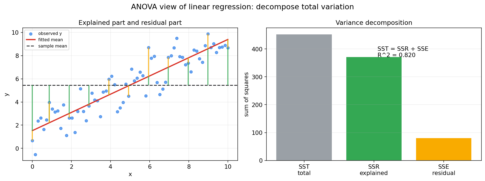
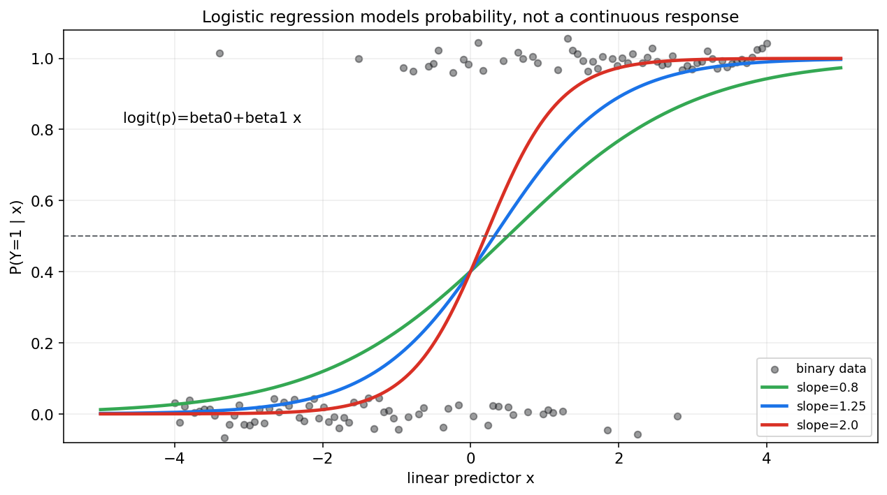

数理统计第十章教程: 回归, 方差分析与广义线性模型初步
前面三章已经建立了数理统计的基本推断语言:
- 第七章: 样本, 统计量与抽样分布
- 第八章: 估计与置信区间
- 第九章: 假设检验与 p 值第十章把这些工具放进更真实的建模问题里:
1. 一个变量怎样随另一个变量变化?
2. 多个解释变量同时出现时, 怎样拆开它们的影响?
3. 多组均值差异能否用同一套方差分解思想理解?
4. 分类问题为什么不能直接用普通线性回归?这一章是经典统计建模的主干, 也是机器学习监督学习的统计入口.
0. 先看全章主线
第十章的主线可以压成下面这张图:
flowchart LR
A["数据<br/>(x_i, y_i)"] --> B["线性回归<br/>条件均值模型"]
B --> C["最小二乘<br/>最小化残差平方和"]
B --> D["系数解释<br/>控制其他变量后的边际变化"]
C --> E["残差分析<br/>检查模型假设"]
B --> F["多元回归<br/>多个解释变量"]
F --> G["模型选择<br/>拟合, 复杂度, 泛化"]
C --> H["方差分析 ANOVA<br/>拆解总波动"]
H --> I["单因素和多因素<br/>主效应与交互"]
A --> J["广义线性模型 GLM<br/>响应变量不必正态"]
J --> K["Logistic 回归<br/>分类概率模型"]一句话概括这一章:
回归分析是在随机波动中寻找变量关系,
方差分析是在总波动中拆解来源,
广义线性模型则把这套思想推广到更广的响应变量类型.
1. 回归到底在问什么
1.1 从相关关系到条件均值
回归问题通常从一组配对数据开始:
我们想知道:
当 $x$ 变化时, $y$ 的平均水平怎样变化?
所以回归不是只画一条线, 它本质上是在建模条件分布:
最常见的第一步是建模条件均值:
1.2 预测和解释是两个目标
回归有两个常见目标:
- 预测
- 给定新的 $x$, 预测未来的 $y$
- 更关心泛化误差
- 允许使用复杂模型, 只要预测稳定
- 解释
- 研究某个变量和响应变量的关系
- 更关心系数含义, 混杂因素, 不确定性
- 不能轻易把相关关系说成因果关系
这两个目标都重要, 但评价标准不同.
1.3 回归不是因果推断
普通回归可以描述关联, 但不能自动证明因果.
例如:
这两个变量可能正相关, 但原因可能是共同受天气温度影响.
要做因果解释, 需要额外条件, 如随机实验, 自然实验, 控制混杂, 工具变量或因果图等.
2. 一元线性回归
2.1 模型形式
一元线性回归写作:
其中:
- $Y_i$ 是响应变量
- $x_i$ 是解释变量
- $\beta_0$ 是截距
- $\beta_1$ 是斜率
- $\varepsilon_i$ 是随机误差
常见假设是:
这意味着:
2.2 图像直觉

图中的散点不是完全落在直线上, 因为响应变量带随机误差.
回归线描述的是平均趋势, 不是每个样本点都必须满足的确定规律.
2.3 截距和斜率
截距 $\beta_0$ 表示当 $x=0$ 时的条件均值:
斜率 $\beta_1$ 表示 $x$ 增加 1 个单位时, $Y$ 的条件均值变化:
解释斜率时要注意单位.
如果 $x$ 是广告预算, 单位从元改成万元, 斜率数值会随之改变.
2.4 外推风险
回归线只在数据覆盖的 $x$ 范围内相对可信.
如果训练数据只覆盖 $x\in[0,10]$, 用模型预测 $x=100$ 的结果就是外推.
外推通常很危险, 因为线性关系可能只在局部成立.
3. 最小二乘法
3.1 残差
给定参数估计 $\hat\beta_0,\hat\beta_1$, 拟合值为:
残差为:
残差是观察值和模型拟合值之间的差.
3.2 残差平方和
最小二乘法选择参数使残差平方和最小:
即:
3.3 一元回归闭式解
令:
则:
这个式子揭示了斜率和协方差的关系:
3.4 最小二乘和极大似然
若误差满足:
则:
最大化正态似然等价于最小化:
所以:
正态误差假设下, 最小二乘估计就是极大似然估计.
这连接了第八章的似然方法和本章的回归.
4. 回归系数的推断
4.1 系数也是估计量
回归系数 $\hat\beta_0,\hat\beta_1$ 由样本计算得到, 所以它们也是随机变量.
因此我们同样关心:
- 标准误
- 置信区间
- t 检验
- p 值
4.2 斜率的假设检验
常见检验是:
如果 $H_0$ 不被拒绝, 说明样本证据不足以支持线性关系.
如果拒绝 $H_0$, 说明在模型假设下, 斜率不为 0 的证据较强.
4.3 t 统计量
斜率的 t 统计量形式为:
在经典正态误差假设下, 若 $H_0$ 成立:
自由度是 $n-2$, 因为一元线性回归估计了两个参数: 截距和斜率.
4.4 解释 p 值时要谨慎
斜率 p 值小, 只能说明在模型假设下, 斜率为 0 与数据不太相容.
它不自动说明:
- 关系是因果的
- 效应大小很重要
- 模型形式正确
- 预测效果一定好
回归推断的语言仍然要遵守第九章的规则.
5. 残差分析
5.1 为什么残差分析不能省
模型假设往往不会直接写在数据表里.
它们通常藏在残差结构中.
残差分析要问:
模型没有解释掉的部分, 是否还残留系统结构?

图中左侧看残差是否围绕 0 随机散开.
右侧看残差分布是否大致对称, 是否有明显异常值.
5.2 常见检查点
线性回归常见诊断包括:
- 线性性
- 残差图中不应出现明显曲线结构
- 同方差性
- 残差波动规模不应随拟合值明显变大或变小
- 独立性
- 时间序列或空间数据中残差可能相关
- 异常值和高杠杆点
- 少数点可能强烈影响回归线
- 正态性
- 主要影响小样本下 t 检验和区间推断的精确性
5.3 残差图常见形状
如果残差图呈弯曲形状, 可能说明:
- 线性形式不够
- 需要加入非线性项
- 需要变换变量
如果残差图呈漏斗形, 可能说明:
- 方差随均值变化
- 需要加权最小二乘
- 需要建模异方差
如果残差随时间成串偏正或偏负, 可能说明:
- 样本不独立
- 存在时间趋势或自相关
5.4 残差不是误差
误差 $\varepsilon_i$ 是理论模型中的未知随机项.
残差 $e_i$ 是用样本拟合后计算出来的剩余.
残差可以观察, 误差不能直接观察.
6. 多元线性回归
6.1 模型形式
当解释变量有多个时, 模型写作:
矩阵形式为:
其中:
- $\mathbf{y}$ 是 $n\times 1$ 响应向量
- $X$ 是 $n\times (p+1)$ 设计矩阵, 第一列通常全为 1
- $\beta$ 是系数向量
6.2 最小二乘矩阵解
最小化:
在 $X^TX$ 可逆时, 解为:
实际计算中通常不用显式求逆, 而使用 QR 分解, SVD 或数值线性代数求解.
6.3 系数解释
多元回归中, $\beta_j$ 的解释是:
在其他变量保持不变时, $x_j$ 增加 1 个单位, $Y$ 的条件均值变化 $\beta_j$.
这句里最关键的是:
其他变量保持不变.
如果变量之间高度相关, 这个解释可能很脆弱.
6.4 多重共线性
多重共线性指解释变量之间高度相关.
它会导致:
- 系数估计不稳定
- 标准误变大
- 单个变量的解释变困难
但它不一定严重影响整体预测.
预测和解释的要求在这里再次分开.
6.5 遗漏变量偏差
如果遗漏了同时影响 $X$ 和 $Y$ 的变量, 回归系数可能带有系统偏差.
例如估计教育年限对收入的影响时, 如果遗漏家庭背景, 地区, 能力等因素, 系数可能混入这些因素的影响.
这也是为什么普通回归不自动等于因果推断.
7. 模型拟合优度与模型选择
7.1 R-squared
线性回归中常用:
其中:
$R^2$ 表示总波动中被模型解释的比例.
7.2 R-squared 的限制
$R^2$ 增大不一定代表模型更好.
加入更多变量通常不会降低训练集 $R^2$, 即使这些变量没有真实意义.
因此还要看:
- 调整 $R^2$
- AIC/BIC
- 交叉验证误差
- 残差结构
- 变量是否有可解释性
- 模型是否能在未来数据上稳定表现
7.3 预测模型选择
如果目标是预测, 应更重视验证集或交叉验证:
训练误差低可能只是过拟合.
模型选择不能只看训练集拟合优度.
7.4 解释模型选择
如果目标是解释, 变量选择要基于问题结构:
- 哪些变量是混杂因素?
- 哪些变量是中介变量?
- 哪些变量不能在因果解释中随便控制?
- 系数解释的目标人群是什么?
解释型建模不能只靠自动逐步回归.
8. 方差分析 ANOVA 的基本思想
8.1 从总波动拆解开始
方差分析的核心思想是:
把响应变量的总波动拆成不同来源.
在线性回归中, 总平方和可拆为:
其中:
- SST: total sum of squares, 总波动
- SSR: regression sum of squares, 模型解释的波动
- SSE: error sum of squares, 残差波动

图中绿色部分表示模型解释的偏离, 黄色部分表示残差偏离.
右侧柱状图显示了总波动如何被拆解.
8.2 F 检验
回归整体显著性常用 F 统计量:
其中 $p$ 是解释变量个数, 不含截距.
在经典线性模型假设下, 若所有斜率都为 0:
这个检验问的是:
模型整体是否比只用均值预测更能解释波动?
8.3 ANOVA 和回归不是两套完全分离的东西
单因素方差分析可以看成带分类变量的线性回归.
回归可以看成更一般的线性模型.
二者共享:
- 平方和分解
- F 检验
- 残差方差估计
- 线性模型框架
9. 单因素方差分析
9.1 问题形式
单因素 ANOVA 比较多个组的均值是否相同.
例如有 $k$ 组:
原假设为:
备择假设是至少有一组均值不同.
9.2 组间波动和组内波动
ANOVA 比较两种波动:
- 组间波动
- 各组均值彼此差多少
- 如果组均值差异大, 说明因素可能有影响
- 组内波动
- 同一组内部样本波动多大
- 如果组内噪声大, 组间差异更难判断
F 统计量本质上是:
如果组间差异远大于组内噪声, F 值就会大.
9.3 拒绝原假设后怎么办
ANOVA 拒绝 $H_0$ 只说明:
至少有一组均值不同.
它不直接告诉你哪两组不同.
要进一步比较, 需要事后检验或多重比较控制, 如 Tukey HSD, Bonferroni 校正等.
10. 多因素方差分析与交互作用
10.1 多因素问题
现实中常有多个因素同时影响响应变量.
例如学习成绩可能受:
- 教学方法
- 班级规模
- 是否有辅导
共同影响.
多因素 ANOVA 可以同时研究多个因素.
10.2 主效应
主效应问的是:
某个因素平均而言是否影响响应变量?
例如教学方法的主效应, 是在平均掉其他因素后, 比较不同教学方法的均值差异.
10.3 交互作用
交互作用问的是:
一个因素的效果是否取决于另一个因素的水平?
例如某种教学方法可能只在小班里有效, 在大班里无效.
这就是教学方法和班级规模之间的交互作用.
10.4 交互项和回归
在线性模型中, 交互作用常通过乘积项表达:
如果 $\beta_3\ne 0$, 说明 $X_1$ 的效应随 $X_2$ 变化.
解释带交互项的模型时, 不要只看主效应系数.
11. Logistic 回归: 分类问题的入口
11.1 为什么不能直接用线性回归
分类问题中, 响应变量常是:
如果直接用线性回归预测 $Y$, 可能出现:
- 预测值小于 0 或大于 1
- 误差方差不恒定
- 正态误差假设不合理
更自然的目标是建模概率:
11.2 Logistic 函数
Logistic 回归使用 sigmoid 函数把线性预测值压到 $(0,1)$:

图中曲线始终位于 0 和 1 之间, 因此可以解释为概率.
11.3 logit 链接函数
Logistic 回归也可写成:
左侧称为 log odds 或 logit.
因此 $\beta_1$ 的解释是:
$x$ 增加 1 个单位时, log odds 增加 $\beta_1$.
如果取指数:
就是 odds ratio.
11.4 似然和交叉熵
对二分类数据:
若模型预测概率为 $p_i$, Bernoulli 似然为:
对数似然为:
最大化对数似然等价于最小化负对数似然:
这正是二分类交叉熵.
所以:
Logistic 回归把分类, 似然和交叉熵放在同一条线上.
12. 广义线性模型 GLM 初步
12.1 GLM 解决什么
普通线性回归默认响应变量是连续型, 且常配合正态误差.
但现实里响应变量可能是:
- 二分类结果
- 计数
- 比例
- 正值连续量
广义线性模型允许响应变量来自更广的分布族, 同时保持线性预测器:
12.2 三个组成部分
GLM 通常由三部分组成:
- 随机成分
- 响应变量的分布, 如 Normal, Bernoulli, Poisson
- 系统成分
- 线性预测器 $\eta=X\beta$
- 链接函数
- 把均值 $\mu=E[Y\mid X]$ 和线性预测器连接起来:
12.3 常见 GLM
| 响应变量 | 分布 | 链接函数 | 模型 |
|---|---|---|---|
| 连续值 | Normal | identity | 线性回归 |
| 二分类 | Bernoulli | logit | Logistic 回归 |
| 计数 | Poisson | log | Poisson 回归 |
这说明线性回归和 Logistic 回归不是孤立技巧, 而是 GLM 框架下的两个特例.
12.4 指数族入口
许多 GLM 使用指数族分布.
指数族的好处是:
- 似然结构统一
- 均值和方差关系清晰
- 优化和推断有通用形式
本章只需要知道 GLM 的框架.
指数族的更深入内容会在后续概率模型章节继续出现.
13. 线性回归, ANOVA, GLM 的统一视角
13.1 共同点
它们都在做同一件事:
用解释变量描述响应变量的系统变化, 再把未解释部分留给随机误差.
共同元素包括:
- 参数
- 估计
- 残差或偏差
- 标准误
- 置信区间
- 假设检验
- 模型诊断
13.2 差异点
差异主要在:
- 响应变量类型不同
- 分布假设不同
- 链接函数不同
- 损失函数或似然不同
普通线性回归适合连续响应.
Logistic 回归适合二分类概率.
Poisson 回归适合计数均值.
13.3 统计建模的基本流程
一个稳妥的建模流程可以写成:
- 明确研究问题: 预测还是解释?
- 明确响应变量类型
- 选择合适的模型族
- 拟合参数
- 做残差或诊断检查
- 评估不确定性
- 检查泛化能力
- 报告限制和假设
14. 本章主线总结
第十章可以压成几句话:
- 一元线性回归建模 $E[Y\mid X=x]$ 的线性变化
- 最小二乘通过最小化残差平方和估计参数
- 正态误差假设下, 最小二乘等价于极大似然
- 回归系数是估计量, 可以做标准误, 区间和检验
- 残差分析用于检查模型假设是否合理
- 多元回归中系数解释是控制其他变量后的边际变化
- ANOVA 通过平方和分解研究波动来源
- Logistic 回归建模分类概率, 与 Bernoulli 似然和交叉熵相连
- GLM 把响应变量分布, 线性预测器和链接函数统一起来
这章最重要的提醒是:
回归不只是画线,
它是一套带假设, 估计, 诊断和解释边界的统计建模框架.
15. 典型题型与实战清单
15.1 典型题型
- 写出回归模型
- 明确响应变量
- 明确解释变量
- 写出误差项
- 求一元 OLS 估计
- 计算 $\hat\beta_1$
- 计算 $\hat\beta_0$
- 解释回归系数
- 注意单位
- 注意是否控制其他变量
- 不轻易说因果
- 判断残差图
- 是否有曲线结构
- 是否异方差
- 是否有异常点
- 计算或解释 $R^2$
- 说明解释波动比例
- 不把高 $R^2$ 当成模型正确
- 识别 ANOVA 问题
- 多组均值比较
- 组间和组内波动
- F 检验
- 写 Logistic 回归模型
- 写概率形式
- 写 logit 形式
- 解释 odds ratio
15.2 实战清单
建模前先问:
- 目标是预测还是解释?
- 响应变量是什么类型?
- 解释变量是否有清晰含义?
- 样本是否独立?
- 是否有明显混杂因素?
- 是否存在异常值或数据质量问题?
建模后再问:
- 残差图是否有结构?
- 是否存在异方差?
- 系数是否稳定?
- 标准误和置信区间多大?
- 预测误差在验证集上如何?
- 结论是否被外推到数据范围之外?
- 是否把相关误说成因果?
16. 典型误区
误区 1: 把相关性说成因果性
回归系数描述的是模型中的条件关联.
没有额外设计或假设, 它不自动表示因果效应.
误区 2: 只看拟合优度, 不看残差结构
高 $R^2$ 不代表模型形式正确.
残差图可能显示非线性, 异方差或异常点.
误区 3: 把预测目标和解释目标混在一起
预测模型可以使用复杂特征提高泛化.
解释模型则更强调变量含义, 混杂控制和推断语义.
误区 4: 忽略多重共线性
解释变量高度相关时, 单个系数可能非常不稳定.
这时不要过度解读某个系数的符号和 p 值.
误区 5: 把 Logistic 回归当成普通线性回归
Logistic 回归建模的是概率和 log odds, 不是直接拟合连续响应.
它的损失来自 Bernoulli 负对数似然, 也就是二分类交叉熵.
误区 6: 忽略分类变量编码
分类变量进入回归通常需要哑变量编码.
基准组不同, 系数解释也会改变.
误区 7: 拒绝 ANOVA 后直接说所有组都不同
ANOVA 显著只说明至少有一组均值不同.
具体哪几组不同, 需要进一步比较并控制多重比较风险.
17. 和前后章节的连接点
17.1 和第八章的连接
回归系数估计, 标准误和置信区间都来自第八章的估计思想.
最小二乘和极大似然也在本章正式连接起来.
17.2 和第九章的连接
回归中的 t 检验, F 检验, p 值和模型整体显著性都直接使用第九章的假设检验语言.
17.3 和第十一章的连接
如果残差严重非正态, 有离群点或模型假设不可靠, 就需要非参数, 重抽样或稳健方法.
这正是第十一章要处理的问题.
17.4 和统计学习章节的连接
线性回归和 Logistic 回归会在统计学习中再次出现:
- 经验风险最小化
- 正则化
- 泛化误差
- 分类交叉熵
- 模型选择
所以本章是传统统计建模和机器学习之间的桥.
18. 本章收尾
第十章把前面估计和检验的工具放入模型中.
从现在开始, 统计问题不再只是一个均值或一个比例, 而是变量之间的系统关系.
但建模越强大, 越要谨慎:
模型给出的是有条件的简化描述,
不是对现实机制的自动证明.
下一章会继续处理一个现实问题:
当参数模型假设不可靠, 或数据含有异常值和厚尾结构时, 我们怎样用非参数, 重抽样和稳健方法继续推断.